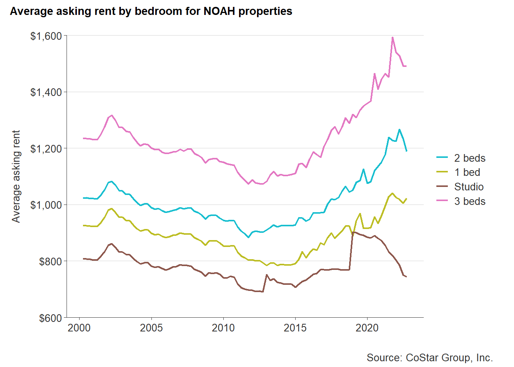
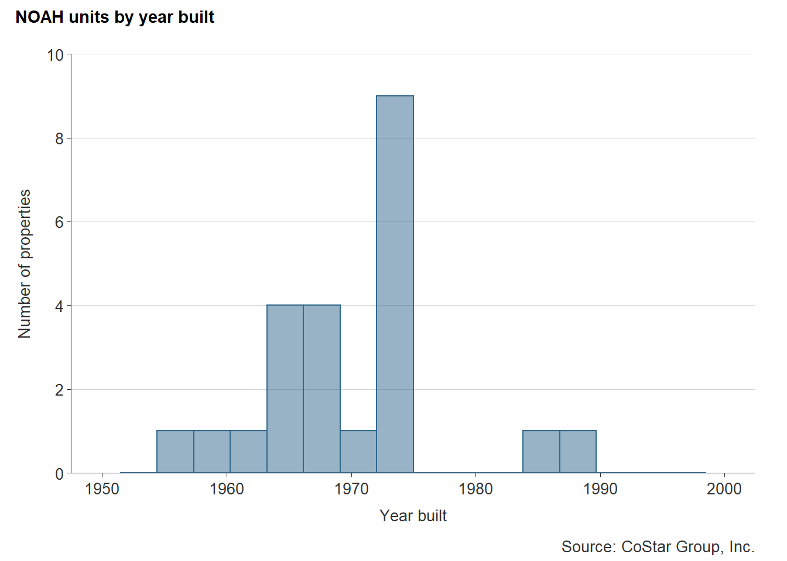
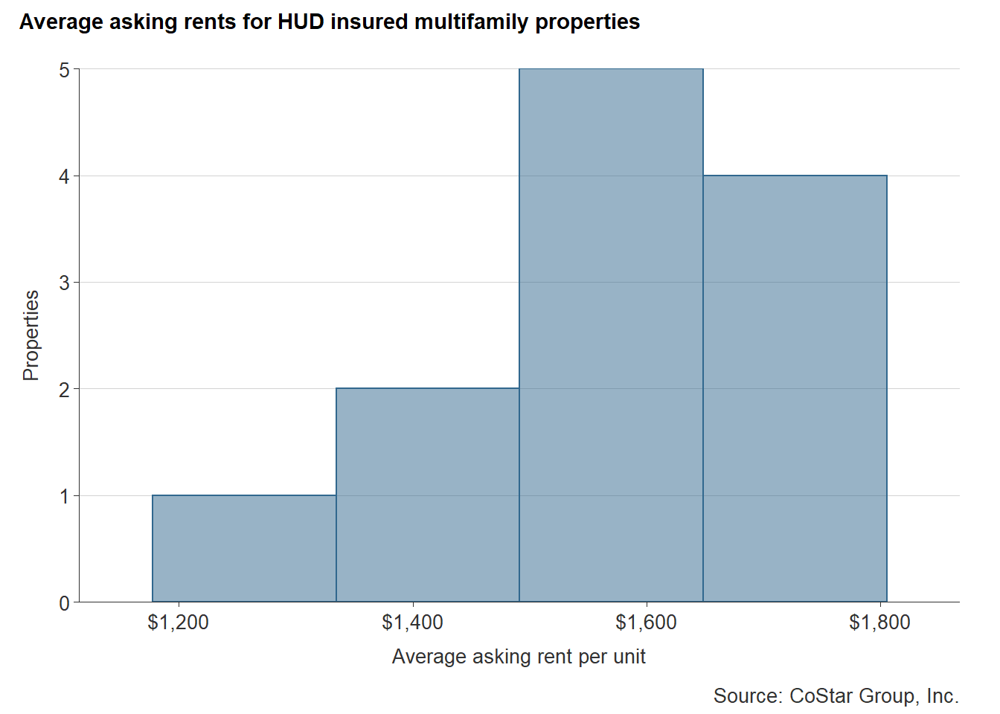

3 Market-affordable housing
This section summarizes research on market affordable housing, or what is commonly referred to as naturally occurring affordable housing (NOAH). Particular focus will be given to determining a common and accepted definition of NOAH.
3.1 Background
Not all affordable housing is supported by public subsidy. In fact, a large share of affordable housing is privately-owned and receives no government assistance. Widely referred to as naturally occurring affordable housing (NOAH), or market-affordable housing, these properties are a growing concern for communities facing housing affordability challenges.
The preservation of NOAH properties has been a growing strategy to support affordable housing in communities as the ability to quickly develop new units has been stifled by labor shortages, rising land prices, and supply chain issues. NOAH is at great risk of being lost because it often requires greater investment to maintain and more likely to be redeveloped—in turn contributing to a loss of affordable housing units.
3.2 Defining NOAH
While research around NOAH has been growing over the past several years, an universally-accepted definition still does not exist. But general agreement among advocates and practitioners is that NOAH units are older, outmoded, and in less desirable locations.
When these characteristics are placed into the context of a community’s rental market, rents are generally lower than the typical rental unit because NOAH units are of comparably lower quality than newer units on the market.
CoStar, a commercial real estate and analytics provider with its global research operations based in Richmond, Virginia, conducted an analysis of NOAH properties in Fall 2016 at the request of Urban Land Institute’s Terwilliger Center for Housing.
This analysis concluded that 76 percent of the 335,978 multifamily properties in their database were NOAH properties. CoStar came to this conclusion based on their proprietary rating system, which gives each property a star rating from one to five stars, wherein one- and two-star properties are the equivalent of Class B and C properties.
The commercial real estate industry utilizes a property classification system to help investors, lenders, and brokers quickly understand and communicate the quality of a property. The system classifies real estate properties as A, B, C, or D.
NOAH properties generally fall into either Class B or C.
Class B
These properties are generally in good condition for being built within the last 20 years, but the exteriors and interiors are generally considered outdated. Amenities are much less than those found in a high end apartment. Renovations may have occurred recently and there is little deferred maintenance.
Class C
These properties were built within the last 30 years or are a much older property that has had recent renovations. Exteriors and interiors are outdated, and amenities are very limited. Improvements to the property show some age and there may be some deferred maintenance.
3.3 NOAH in Chesterfield County
The following analysis on NOAH inventory in Chesterfield County uses data from CoStar Group, Inc. Properties were selected if they met these criteria:
- Existing multifamily properties with active leases,
- Classified as Class B or C,
- No public subsidy, rent caps, or other income-based restrictions, and
- CoStar Building Rating of two or fewer stars out of five.1
- Built before 2000
- Excluding single-family homes
Manufactured homes are a key source of NOAH throughout Virginia, especially along Chesterfield County’s major corridors. However, the CoStar database does not fully capture all of these communities.
In 2016, the Manufactured Home Community Coalition of Virginia (MHCCV) conducted a study of mobile home parks in Central Virginia and found that Chesterfield County was home to roughly 1,500 units within parks—the highest of any Central Virginia locality, with the second highest locality being Prince George at 831.
The analysis below includes all manufactured home communities in Chesterfield County identified in the MHCCV report. They are appended to the CoStar records to create a fuller NOAH dataset. However, the only known variables are property location and number of units within each park. Accurate rent levels for most of these communities are not known at this time.
3.3.1 Amount
Chesterfield County is home to 5,155 market-affordable rental units as of August 2022. These apartments are predominately in garden-style buildings with 200 to 250 units per property. A smaller share of these NOAH units are found in manufactured home communities and low-rise multifamily buildings.
| Style | Properties | Units |
|---|---|---|
| Garden | 19 | 3,548 |
| Manufactured Home Community | 13 | 1,491 |
| Low-Rise | 4 | 116 |
| Total | 36 | 5,155 |
| Source: CoStar Group, Inc. |
This NOAH inventory is approximately 16 percent of the county’s total number of rental units according to the latest Census Bureau estimates.2 However, that estimate includes the approximately 10,000 single-family homes leased out in Chesterfield.
3.3.2 Location
NOAH properties are spread throughout all parts of Chesterfield County, but like most NOAH properties nationwide, they are largely located in the inner suburbs—areas that saw early development towards the middle of the 19th century. These include garden style apartments like Falling Creek Apartments along Route One or manufactured home communities like Suburban Village off of Midlothian Turnpike.
3.3.3 Rent levels
As of early 2022, average rents in Chesterfield’s NOAH units range from $744 to $1,491 depending on the number of bedrooms. The minimum gross annual income to afford the average 2-bedroom market-affordable apartment is $47,560.
| Bedrooms | Rent |
|---|---|
| Studio | $744 |
| 1 Bed | $1,023 |
| 2 Beds | $1,189 |
| 3 Beds | $1,491 |
| Source: CoStar Group, Inc. |
Market rents in Chesterfield’s NOAH units have increased significantly as demand for lower-cost apartments continues to exceed the supply. Much of this price growth has occurred since 2015. Prior to that year, the average 3-bedroom NOAH unit could be rented for less than $1,200 per month.

3.3.4 Age
The majority of Chesterfield’s NOAH properties are older than 40 years. These buildings were primarily constructed in two major production cycles:
- The mid 1960s to the mid 1970s, and
- The late 1980s and early 1990s.
The median age of the county’s NOAH units is 53 years. (Built in 1969.)

3.3.5 Examples
Falling Creek Apartments

- Units: 348
- Two-bedroom asking rent: $955
- Style: Garden apartments
- Neighborhood: Bensley
Suburban Village Manufactured Home Community

- Units: 220 units
- Asking lot rent: Approximately $500 to $600
- Style: Manufactured home community
- Neighborhood: Bon Air
3.4 HUD insured multifamily properties
Chesterfield County also contains 19 multifamily properties with mortgages insured by various HUD programs. These complexes are not necessarily NOAH, nor are they required to restrict rents or incomes. In fact, only one of these properties has active rental assistance through the Section 8 program. In all, there are 2,280 active units across these communities.
HUD mortgage insurance programs offer certain financing benefits to developers (e.g. longer terms, lower or fixed rates, nonrecourse loans) in exchange for additional due diligence, federal wage standards, and other considerations to guarantee a high-quality and successful development. Both for profit and nonprofit builders can be eligible in most circumstances. HUD issues hundreds of these mortgages across the nation each year.
More details about these multifamily mortgage insurance programs is available on the HUD website.
Of these 19 properties, CoStar has active rent levels for 12. The average asking rent for these units is $1,600, which is above the range for most NOAH across the county.

3.5 Takeaways
- NOAH properties are a key resource for communities facing affordability challenges. However, NOAH properties face challenges themselves.
- The investments needed to maintain or improve the quality of NOAH properties are often out of reach for many property owners. However, making those investments can often lead to rent increases that price existing residents out of that housing.
- Strategies in NOAH preservation are becoming a growing area of interest among localities seeking to leverage limited resources for preserving existing affordable housing.
- NOAH units comprise a significant share of Chesterfield County’s rental market, but are experiencing rapid rent escalation despite their above-average age compared to the rest of the county’s housing stock.